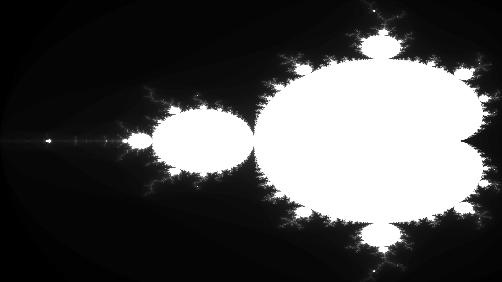

Graphing the Mandelbrot Set
Nicholas L June 10, 2023 [programming] #graphicsThe Mandelbrot set is defined as the set of complex numbers where if you take the function $f_c(z) = z^2 + c$ and recursively evaulate it starting with $z = 0$ and a given $c$ where it does not diverge. We can graph this by representing each pixel with position or $c$ value on the complex plane.
I will be using Rust with minifb for a framebuffer and rayon for multithreading.
[]
= "0.24.0"
= "1.7.0"
First of all lets create a buffer for our image and set up minifb.
use ;
use Error;
const WIDTH: usize = 2560;
const HEIGHT: usize = 1440;
Let's write a function to evaluate $f_c(z) = z^2 + c$. For the sake of clarity $z_a = x$ and $z_b = y$ where $z_a$ is the real component and $z_b$ the imaginary component of the complex number $z$. Similarly $c_a = x_0$ and $c_b = y_0$. I've chosen this notation to be consistent with the wikipedia page on the mandelbrot set.
Rust doesn't have an inbuilt complex number primitive so we could either create our own struct or operate directly on the real and imaginary components. I've opted to operate directly on the components since we aren't doing much arithmetic. The following is $f_c(z)$ expressed in terms of the components of $z$ and $c$.
$$ f_c(z) = z^2 + c $$ $$ =(x + yi)(x + yi) + (x_0 + y_0i) $$ $$ =x^2 + 2xyi - y^2 + x_0 + y_0i $$ $$ = (x^2 - y^2 + x_0) + (2xy + y_0)i $$
Now let's create a function to tell if for given $c$ value our recursive sequence diverges or not. One of the basic properties of our sequence is that it will diverge if at any point $|f_c(z)| > 2$ (or alternatively $|f_c(z)|^2 > 4$). This is because the entire mandelbrot set lies within a circle with radius 2. Using this property we can check for a given $c$ value if the sequence will diverge within a given amount of iterations.
const ITERATIONS: usize = 1024;
...
We can now use this to graph the mandelbrot set! We'll assign the colour white to anything that fails to diverge and black to everything else. The entire mandelbrot set lies between $-2 - 1.2i$ and $0.5 + 1.2i$ so let's map the pixels of our image to between those values.
For example to map our pixels $y$ coordinates to our $i$ range we can use the following formula: $y_{min} + y_{range}\frac{p_{y}}{p_{ymax}}$, we do the same for mapping our pixels $x$ coordinates to our real number range.
use ;
use Error;
const WIDTH: usize = 2560;
const HEIGHT: usize = 1440;
const ITERATIONS: usize = 1024;
This takes around 3 seconds with my 5950x and produces this image:
The resulting image is rather underwelming to say the least, a lot of the interesting detail isn't there! This is due to our binary diverges/doesn't diverge approach. Before we improve on that aspect that let's speed up the render.
Multithreading
Perhaps the easiest speedup would be to convert our single-threaded render loop to a multi-threaded,
we can do this with rayon by replacing for (i, pixel) in buffer.iter_mut().enumerate() { ... } with
buffer.par_iter_mut().enumerate().for_each(|(i, pixel)| { ... });
use *;
...
buffer.par_iter_mut.enumerate.for_each;
The render now takes around 130ms on my 5950x (16 cores, 32 threads) which is about a ~23x speedup!
Optimising
We can also optimise our diverges function. We'll need to inline our iterate function so lets do that.
First of all we can move the mag_sqaured > 4.0 check to the start of the loop and start with the values from the first iteration.
This gets us to around ~118ms. We can also store the values of $x^2$ and $y^2$ which removes some duplicate calculations.
This doesn't seem to make a noticable difference in my case but I'm going to stick with it since it makes the code a bit neater.
Early Exit
A big problem with our program is that if a point falls within the main cardiod or the period 2 bulb (the circle to the left) we know that it will not diverge but our program does not which means we will go through all (1024) iterations. Let's add a check to early exit if this is the case.
We can check if the a point is in the main cardoid with the following: $$ q = (x-\frac{1}{4})^2 + y^2 $$ $$ 4q(q + (x - \frac{1}{4})) \leq y^2 $$ We can check if a point is in the period 2 bulb with the following: $$ (x + 1)^2 + y^2 \leq \frac{1}{16} $$
Implementing this in code might look like this:
Note that I've also calculated the initial x and y squared outside of loop. I've found that doing this before applying the early exit optimisation reduces performance by around ~20ms to ~140ms for some reason. It doesn't seem to make a noticable difference after implementing the early exit.
After implementing early exit the render time is around 17ms.
Symmetry
The Mandelbrot set is symmetric aross the x axis / real number line. We can take this to our advantage to only render the top half of the image then flip it.
const HALF_HEIGHT: usize = HEIGHT / 2;
This brings the render time down to around 14ms. I suspect that there are unnesscary allocations but it works well enough.
Cycles
Another optimisation we can make is checking for cycles while we are iterating, if we detect a cycle it means that point will never diverge so we can exit early.
To detect cycles we can store the initial value of z after the first iteration and check if any of the preceding z values match. We can update our value of z ever so often since cycles don't have to start from the first z value.
This brings down the render time to around 12ms.
Better graphing
Currently we have a binary diverges/doesn't diverge colouring which leaves out a lot of detail. Instead we can colour based on how many iterations it takes it cross our 2 threshold.
First let's modify the diverges function to return the iteration it crossed our 2 threshold on or otherwise return the max iteration.
Lets create a function that takes iteration and returns a colour:
The above interpolates between black and white given an iteration count.
We also need to modify our buffer creation:
buffer.par_iter_mut.enumerate.for_each;
We now get this image: 
Conclusion
For me this is where I stop. If you want to explore more around this topic such as more advanced algorithms or different colourings have a look at wikipedia where I got most of this information from.